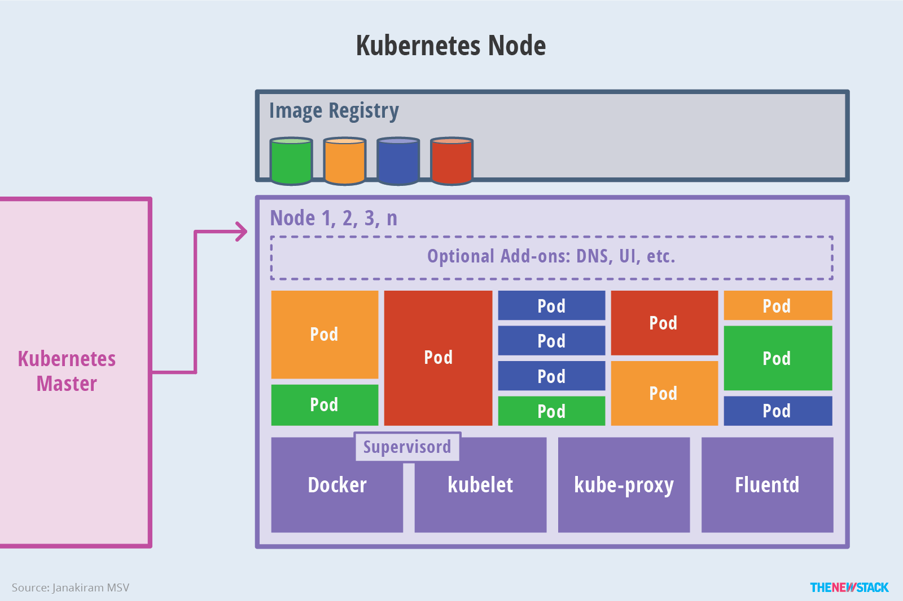

部署的演化历史
- 传统部署
- 资源分配问题
- 虚拟化部署
- 量级较重
- 容器化部署
- 敏捷应用程序的创建和部署
- 持续开发、集成和部署方便
- 开发运维分离
- 可观察性丰富
- 跨开发、测试和生产环境一致
- 云和操作系统分发的可移植性强
- 以应用程序为中心管理
- 适合松散耦合、分布式、弹性、解放的微服务
- 资源隔离
- 资源利用率高

容器部署时代面临的问题
问题
- 服务集群越来越大
- 传统的集群容器部署方式较繁琐
- 工作量日益加大
- 容易出错
解决方向
需要一个强大的容器管理、编排系统
解决方案
kubernetes[K8S]
K8S是什么？
特点
- 可移植
- 可扩展
- 开源
- 生态系统庞大且有活力
作用
- 服务发现和负载均衡
- 存储编排
- 自动部署和回滚
- 自动二进制打包
- 自我修复
- 秘钥与配置管理
其它意义
- 促进声明式配置
- 自动化
架构

架构图
组件
- Master【集群控制平面】
- kube-apiservice
- 主节点上负责提供 Kubernetes API 服务的组件
- 支持水平扩缩
- etcd
- 作为保存 Kubernetes 所有集群数据的后台数据库
- 兼具一致性和高可用性的键值数据库
- 通常需要有个备份计划
- kube-scheduler
- 监视新创建的未指定运行节点的 Pod
- 选择节点让 Pod 在上面运行
- kube-controller-manager
- Node Controller
- 负责在节点故障时进行通知和响应
- Replication Controller（RC）
- 负责为系统中每个副本控制器对象维护正确数量的 Pod
- Endpoints Controller
- 填充端点（Endpoints）对象（即加入 Service 与 Pod）
- Service Account & Token Controllers
- 为新的命名空间创建默认账户和 API 访问令牌
- Node Controller
- cloud-controller-manager
- 运行与基础云提供商交互的控制器
- kube-apiservice
- Node【维护运行的 Pod 并提供 Kubernetes 运行环境】
- kubelet
- 保证容器都运行在 Pod 中
- 接收一组通过各类机制提供给它的 PodSpecs，确保 PodSpecs 中描述的容器处于运行状态且健康
- 不会管理不是由 Kubernetes 创建的容器
- kube-proxy
- 是集群中每个节点上运行的网络代理，实现 Kubernetes Service 概念的一部分
- 维护节点上的网络规则
- 允许从集群内部或外部网络会话与 Pod 进行网络通信
- 容器运行环境（Docker 等）
- 负责运行容器
- kubelet
- Addons【使用 Kubernetes 资源 (DaemonSet, Deployment等) 实现集群功能；命名空间为：kube-system】
- DNS
- 所有 Kubernetes 集群都应具有 DNS (非强制性要求)
- 为 Kubernetes 集群提供 DNS 记录
- Kubernetes 启动的容器自动将 DNS 服务器包含在 DNS 搜索中
- Dashboard
- Web UI
- 使用户可以管理集群中运行的应用程序以及集群本身进行故障排除
- 容器资源监控
- 将关于容器的一些常见的时间序列度量值保存到一个集群数据库中
- 提供用于浏览这些数据的界面
- 集群层面日志
- 负责将容器的日志保存到一个集中的日志存储中
- 提供搜索和浏览接口
- DNS

Node
其他组件
- kubectl【操控 Kubernetes 集群】
- 负责管理 Pods 和它们上面的容器，镜像、volumes、etc
设计理念
核心理念：
- 容错性
- 扩展性
API 设计原则
- 所有 API 应该是声明式的
- AIP 对象是彼此互补且可组合的
- 高层 API 以操作意图为基础设计
- 底层 API 根据高层 API 的控制需要设计
- 尽量避免简单封装，不要有在外部 API 无法显式知道的内部隐藏机制
- API 操作复杂度与对象数量成正比
- API 对象状态不能依赖于网络连接状态
- 尽量避免让操作机制依赖于全局状态
控制机制设计原则
- 控制逻辑应该只依赖于当前状态
- 假设任何错误的可能，并做容错处理
- 尽量避免复杂状态机，控制逻辑不要依赖无法监控的内部状态
- 假设任何操作都可能被任何操作对象拒绝，甚至被错误解析
- 每个模块都可以在出错后自动恢复
- 每个模块都可以在必要的时候优雅的降级服务
核心技术概念
| 术语 | 语义 | 备注 |
|---|---|---|
| Pod | 集群中部署应用或服务的最小单元，可以包含多个容器 | |
| 副本集（Replica Set，RS） | 新一代 RC，支持更多匹配模式 | |
| 部署（Deployment） | 表示用户对集群的一次更新操作 | |
| 服务（Service） | 客户端要访问的服务就是 Service 对象 | 每个 Service 会对应一个集群内部的虚拟 IP，集群内部通过虚拟 IP 访问服务 |
| 任务（Job） | 控制批处理型任务的对象 | |
| 后台支撑服务集（DaemonSet） | 保证每个节点都有此类 Pod 运行 | 典型的支持服务有：存储、日志、监控等 |
| 有状态服务集（PetSet） | 每个 Pod 的名字要事先确定，挂载自己独立的存储 | 适合 PetSet 的业务：MySQL、PostgreSQL、Zookeeper等 |
| 集群联邦（Federation） | 提供扩区域跨服务商能力 | 每个 Federation 有自己的分布式存储、API Server 和 Controller Manager |
| 存储卷（Volume） | 与 Docker 存储卷类似，不过作用访问是 Pod | |
| 持久存储卷（Persistent Volume，PV）和持久存储卷声明（Persistent Volume Claim，PVC） | 使集群具备存储的逻辑抽象能力 | PV 和 PVC 的关系相当于 Node 和 Pod 的关系 |
| 名称（Names） | Kubernetes REST API 中的所有对象都由名称和 UID 明确标识；一次只能有一个给定类型的对象具有给定的名称（如果删除对象，则可以创建同名的新对象） | |
| UIDs | 系统生成的字符串，唯一标识对象；在集群的整个生命周期中创建的每一个对象都有一个不同的 UID，用来区分类似实体的历史事件 | |
| 命名空间（Namespace） | Kubernetes 支持多个虚拟集群，依赖于同一物理集群。这些虚拟集群被称为命名空间。 | |
| 标签和选择器（Labels & Selectors） | 标签是附加到 Kubernetes 对象上的键值对，用于指定对用户有意义且相关的对象标识属性，但不直接对核心系统有语义含义 | 每个对象都可以定义一组键/值标签，每个键对于给定对象必须唯一 |
| 注解（Annotations） | 可以使用注解为对象附加任意的非标识的元数据 | |
| 字段选择器（Field Selectors） | 允许根据多个或多个资源字段的值筛选 Kubernetes 资源 |
Kubernetes 对象管理
应该只使用一种技术来管理 Kubernetes 对象；混合和匹配技术作用于同一对象上将导致未定义行为
| 类型 | 使用环境 | 优点 | 缺点 |
|---|---|---|---|
| 命令式命令 | 测试 | 1. 命令简单，易学、易记；2. 快速更改集群 | 1. 命令不与变更审查流程集成； 2. 不提供与更改管理的审核跟踪； 3.除了实时内容，命令不提供记录源； 4. 不提供用于创建新对象的模板 |
| 命令式对象配置 | 生产 | 与命令式命令相比： 1. 可以存储在源控制系统中，如：Git； 2. 可以与流程集成，如：在推送和审计之前检查更新； 3.提供用于创建新对象的模板； 与声明式对象配置相比： 1. 配置行为简单易懂； 2. 更加成熟 |
与命令式命令相比： 1. 需要对对象架构有了解； 2. 需要些 YAML 文件； 与声明式对象配置相比： 1. 对活动对象的更新必须反映在配置文件中，否则将在下一次替换时丢失； 2. 针对文件而不是目录 |
| 声明式对象配置 | 生产 | 1. 即使未将对活动对象所做的更改未合并回配置文件中，也将保留这些更改； 2. 更好的支持对目录进行操作并自动检测每个对象的操作类型（创建、修补、删除） |
1. 配置难于调试并且出现异常时难以理解； 2. 使用差异的部分更新会创建复杂的合并和补丁操作 |
使用
安装
cat <<EOF > /etc/apt/sources.list.d/kubernetes.list
deb http://mirrors.ustc.edu.cn/kubernetes/apt kubernetes-xenial main
EOF
apt-get update
apt-get install -y kubelet kubeadm kubectl
apt-mark hold kubelet kubeadm kubectl